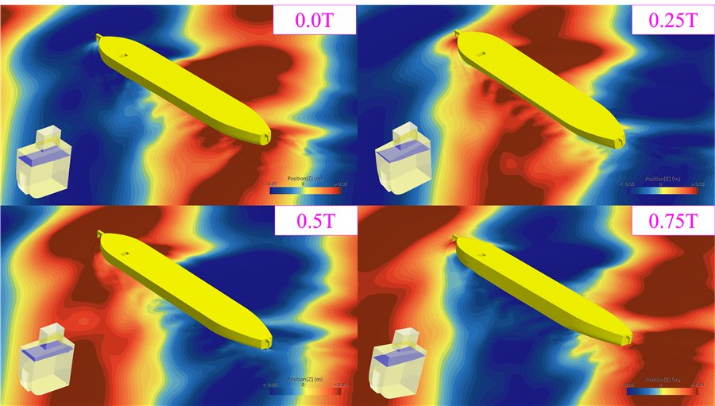
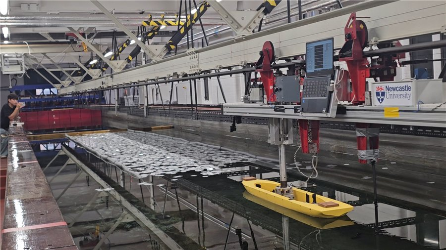
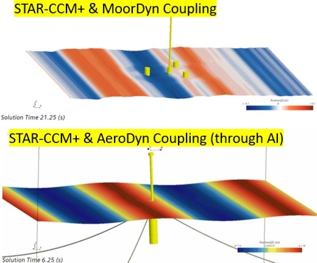

Research scope
Five areas of work
Each area is supported by both experiment and simulation. Follow a card for detail, methods and representative results.

Ship Resistance
Modelling the roughness effects of marine biofouling and state-of-the-art antifouling coatings on ship resistance.
Read more →

Ship Hydrodynamics & Energy Efficiency
Seakeeping and six-degree-of-freedom free-running manoeuvring CFD, with experimental evaluation of air lubrication and wind-assisted propulsion.
Read more →

Polar & Ice-Going Ships
Ice resistance prediction for polar vessels through coupled CFD–DEM simulation and ice-tank model testing.
Read more →

Marine Renewable Energy
Performance and load analysis of tidal current turbines and floating offshore wind turbines.
Read more →

Applied & Environmental Hydrodynamics
Dissolved-oxygen transport in marine aquaculture cages and scour around bridge piers.
Read more →